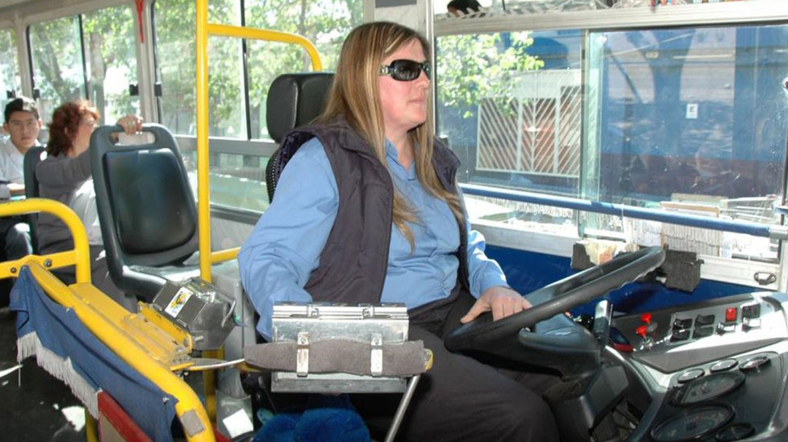
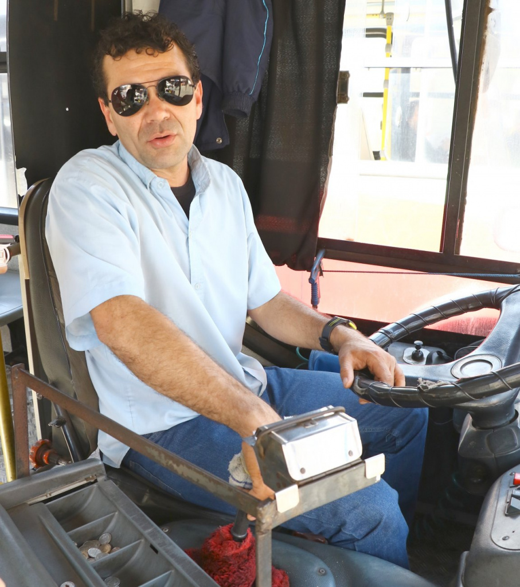

Estos son algunos de los colectiveros que te pueden tocar si subis a un colectivo en Parque Chacabuco
Javier
Buena onda, le pedis para bajar adelante y te deja. Padre de familia, lo hace por la nena. Un capo. 10/10

Sandra
Divorciada hace 10 años, se hace la mala pero es re buena con los nenes. Se le planta a los chorros pero muchas veces le sale mal y le roban a ella tambien. 8/10
Ivan
Traumado con la bocina, no la quiere tocar porque le recuerda a la infancia. Hace maniobras raras para frenar porque no se controla a veces. Buen tipo de todas formas.6/10

Hector
Más de 20 años laburando de colectivero, medio malote y tiene antecedentes con la "farlopa". No lo mires porque se enoja. Vive en el bajo. 3/10.